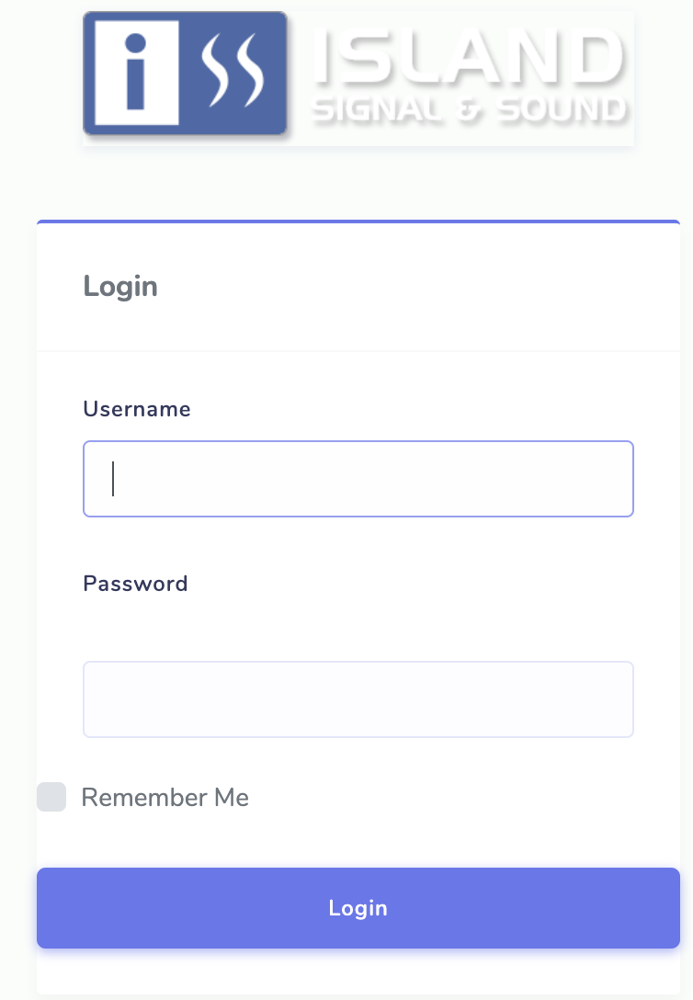
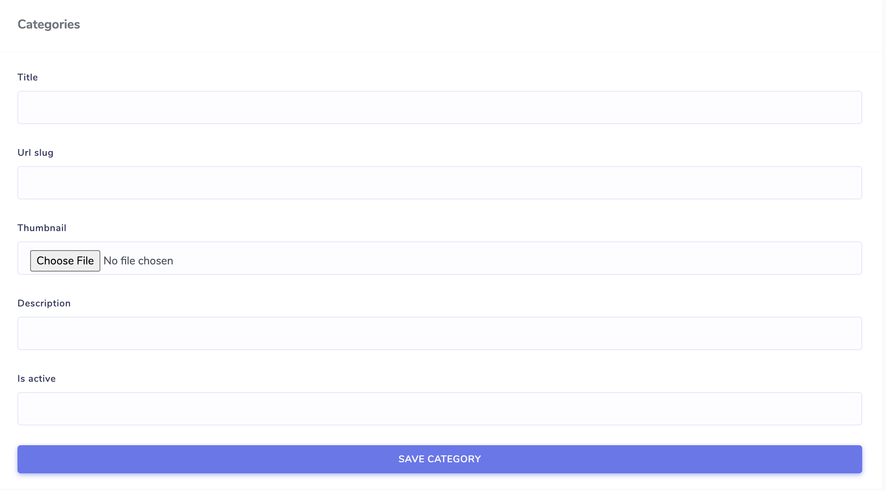

Fire Alarm
I decided to build my old company, a fire almarm/life safety distributor, a prototype ecommerce webpage. After learning Django for a week, I decided to build this project using Django. And to spice it up use a new technology I haven't used before SQLITE. I went with SQLITE instead of SQL because It's just a direct filesystem engine that uses SQL syntax. It is easier to retrieve data.
